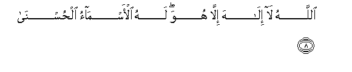

Sacred Texts Islam Index
Hypertext Qur'an Unicode Palmer Pickthall Yusuf Ali English Rodwell
Sūra XX.: Ṭā-Hā. (Mystic Letters, Ṭ. H.) Index
Previous Next

The Holy Quran, tr. by Yusuf Ali, [1934], at sacred-texts.com
Sūra XX.: Ṭā-Hā. (Mystic Letters, Ṭ. H.)
Section 1
1. Tā-Hā.
2. Ma anzalna AAalayka alqur-ana litashqa
2. We have not sent down
The Qur-ān to thee to be
(An occasion) for thy distress,
3. Illa tathkiratan liman yakhsha
3. But only as an admonition
To those who fear (God),—
4. Tanzeelan mimman khalaqa al-arda waalssamawati alAAula
4. A revelation from Him
Who created the earth
And the heavens on high.
5. Alrrahmanu AAala alAAarshi istawa
5. (God) Most Gracious
Is firmly established
On the throne (of authority).
6. Lahu ma fee alssamawati wama fee al-ardi wama baynahuma wama tahta alththara
6. To Him belongs what is
In the heavens and on earth,
And all between them,
And all beneath the soil.
7. Wa-in tajhar bialqawli fa-innahu yaAAlamu alssirra waakhfa
7. If thou pronounce the word
Aloud, (it is no matter):
For verily He knoweth
What is secret and what
Is yet more hidden.

8. Allahu la ilaha illa huwa lahu al-asmao alhusna
8. God! there is no god
But He! To Him belong
The Most Beautiful Names.
9. Has the story of Moses
Reached thee?
10. Ith raa naran faqala li-ahlihi omkuthoo innee anastu naran laAAallee ateekum minha biqabasin aw ajidu AAala alnnari hudan
10. Behold, he saw a fire:
So he said to his family,
"Tarry ye; I perceive
A fire; perhaps I can
Bring you some burning brand
Therefrom, or find some guidance
At the fire."
11. Falamma ataha noodiya ya moosa
11. But when he came
To the fire, a voice
Was heard: "O Moses!
12. Innee ana rabbuka faikhlaAA naAAlayka innaka bialwadi almuqaddasi tuwan
12. "Verily I am thy Lord!
Therefore (in My presence)
Put off thy shoes: thou art
In the sacred valley Ṭuwā
13. Waana ikhtartuka faistamiAA lima yooha
13. "I have chosen thee:
Listen, then, to the inspiration
(Sent to thee).
14. Innanee ana Allahu la ilaha illa ana faoAAbudnee waaqimi alssalata lithikree
14. "Verily, I am God:
There is no god but I:
So serve thou Me (only),
And establish regular prayer
For celebrating My praise.
15. Inna alssaAAata atiyatun akadu okhfeeha litujza kullu nafsin bima tasAAa
15. "Verily the Hour is coming—
My design is to keep it
Hidden—for every soul
To receive its reward
By the measure of
Its Endeavour.
16. Fala yasuddannaka AAanha man la yu/minu biha waittabaAAa hawahu fatarda
16. "Therefore let not such as
Believe not therein
But follow their own
Lusts, divert thee therefrom,
Lest thou perish!"…
17. Wama tilka biyameenika ya moosa
17. "And what is that
In thy right hand,
O Moses?"
18. Qala hiya AAasaya atawakkao AAalayha waahushshu biha AAala ghanamee waliya feeha maaribu okhra
18. He said, "It is
My rod: on it
I lean; with it
I beat down fodder
For my flocks; and
In it I find
Other uses."
19. (God) said, "Throw it,
O Moses!"
20. Faalqaha fa-itha hiya hayyatun tasAAa
20. He threw it, and behold!
It was a snake,
Active in motion.
21. Qala khuthha wala takhaf sanuAAeeduha seerataha al-oola
21. (God) said, "Seize it,
And fear not: We
Shall return it at once
To its former condition"…
22. Waodmum yadaka ila janahika takhruj baydaa min ghayri soo-in ayatan okhra
22. "Now draw thy hand
Close to thy side:
It shall come forth white
(And shining), without harm
(Or stain),—as another Sign,—
23. Linuriyaka min ayatina alkubra
23. "In order that We
May show thee
(Two) of our Greater Signs.
24. Ithhab ila firAAawna innahu tagha
24. "Go thou to Pharaoh,
For he has indeed
Transgressed all bounds."